| 3GPP TR 38.836 V17.0.0 (2021-03) | |
|---|---|
| Technical Report | |
3rd Generation Partnership Project; Technical Specification Group Radio Access Network; Study on NR sidelink relay; (Release 17) |
|
| The present document has been developed within the 3rd
Generation Partnership Project (3GPP TM) and may be further
elaborated for the purposes of 3GPP. The present document has not been subject to any approval process by the 3GPP Organizational Partners and shall not be implemented. This Specification is provided for future development work within 3GPP only. The Organizational Partners accept no liability for any use of this Specification. Specifications and Reports for implementation of the 3GPP TM system should be obtained via the 3GPP Organizational Partners' Publications Offices. |
|
|
Copyright Notification No part may be reproduced except as authorized by written
permission. © 2021, 3GPP Organizational Partners (ARIB, ATIS, CCSA, ETSI, TSDSI, TTA, TTC). All rights reserved. UMTS™ is a Trade Mark of ETSI registered for the benefit of its members 3GPP™ is a Trade Mark of ETSI registered for the benefit of its
Members and of the 3GPP Organizational Partners GSM® and the GSM logo are registered and owned by the GSM Association |
Foreword 5
1 Scope 6
2 References 6
3 Definitions of terms, symbols and abbreviations 6
3.1 Terms 6
3.2 Abbreviations 6
4 Sidelink-based UE-to-Network Relay 7
4.1 Scenarios, Assumptions and Requirements 7
4.2 Discovery 8
4.3 Relay (re-)selection criterion and procedure 9
4.4 Relay/Remote UE authorization 10
4.5 Layer-2 Relay 10
4.5.1 Architecture and Protocol Stack 10
4.5.1.1 Protocol Stack 10
4.5.1.2 Adaptation layer functionality 11
4.5.2 QoS 12
4.5.3 Security 12
4.5.4 Service Continuity 12
4.5.4.0 General 12
4.5.4.1 Switching from indirect to direct path 12
4.5.4.2 Switching from direct to indirect path 13
4.5.5 Control Plane Procedure 14
4.5.5.1 Connection Management 14
4.5.5.2 Paging 16
4.5.5.3 System Information Delivery 16
4.5.5.4 Access control 16
4.6 Layer-3 Relay 16
4.6.1 Architecture and Protocol Stack 16
4.6.2 QoS 17
4.6.3 Security 17
4.6.4 Service Continuity 17
4.6.5 Control Plane Procedure 18
5 Sidelink-based UE-to-UE Relay 18
5.1 Scenario, Assumption and Requirement 18
5.2 Discovery 19
5.3 Relay (re-)selection criteria and procedure 20
5.4 Relay/Remote UE authorization 20
5.5 Layer-2 Relay 20
5.5.1 Architecture and Protocol Stack 20
5.5.2 QoS 21
5.5.3 Security 22
5.5.4 Control Plane Procedure 22
5.6 Layer-3 Relay 22
5.6.1 Architecture and Protocol Stack 22
5.6.2 QoS 22
5.6.3 Security 22
5.6.4 Control Plane Procedure 22
6 Conclusion 22
6.1 Evaluation and Conclusion of UE-to-Network Relay 22
6.1.1 Layer-2 Relay 22
6.1.1.0 Conclusions of Layer-2 Relay 22
6.1.1.1 Relay discovery and (re)selection 22
6.1.1.2 Relay UE and Remote UE authorization 22
6.1.1.3 QoS management 22
6.1.1.4 Service continuity 23
6.1.1.5 Security 23
6.1.1.6 Protocol stack design 23
6.1.1.7 CP procedures 23
6.1.2 Layer-3 Relay 23
6.1.2.0 Conclusions of Layer-3 Relay 23
6.1.2.1 Relay discovery and (re)selection 23
6.1.2.2 Relay and Remote UE authorization 24
6.1.2.3 QoS management 24
6.1.2.4 Service continuity 24
6.1.2.5 Security 24
6.1.2.6 Protocol stack design 24
6.1.2.7 CP procedures 24
6.2 Evaluation and Conclusion of UE-to-UE Relay 24
6.2.1 Layer-2 Relay 24
6.2.1.0 Conclusions of Layer-2 Relay 24
6.2.1.1 Relay discovery and (re)selection 24
6.2.1.2 Relay and Remote UE authorization 24
6.2.1.3 QoS management 24
6.2.1.4 Security 24
6.2.1.5 Protocol stack design 25
6.2.1.6 CP procedures 25
6.2.2 Layer-3 Relay 25
6.2.2.0 Conclusions of Layer-3 Relay 25
6.2.2.1 Relay discovery and (re)selection 25
6.2.2.2 Relay UE and Remote UE authorization 25
6.2.2.3 QoS management 25
6.2.2.4 Security 25
6.2.2.5 Protocol stack design 25
6.2.2.6 CP procedures 25
6.3 Feasibility and Recommendation 25
Annex A: Change history 26
This Technical Report has been produced by the 3rd Generation Partnership Project (3GPP).
The contents of the present document are subject to continuing work within the TSG and may change following formal TSG approval. Should the TSG modify the contents of the present document, it will be re-released by the TSG with an identifying change of release date and an increase in version number as follows:
Version x.y.z
where:
x the first digit:
1 presented to TSG for information;
2 presented to TSG for approval;
3 or greater indicates TSG approved document under change control.
y the second digit is incremented for all changes of substance, i.e. technical enhancements, corrections, updates, etc.
z the third digit is incremented when editorial only changes have been incorporated in the document.
The present document is related to Study on NR Sidelink Relay with a scope as defined in [2].
The document describes NR enhancements to support sidelink relay, which were analyzed as part of the study such as sidelink-based UE-to-Network and UE-to-UE Relay, and discovery model/procedure for sidelink relaying.
The following documents contain provisions which, through reference in this text, constitute provisions of the present document.
- References are either specific (identified by date of publication, edition number, version number, etc.) or non‑specific.
- For a specific reference, subsequent revisions do not apply.
- For a non-specific reference, the latest version applies. In the case of a reference to a 3GPP document (including a GSM document), a non-specific reference implicitly refers to the latest version of that document in the same Release as the present document.
[1] 3GPP TR 21.905: "Vocabulary for 3GPP Specifications".
[2] 3GPP RP-193253 "New SID: Study on NR sidelink relay".
[3] 3GPP TS 23.303 "Proximity-based services (ProSe);Stage 2 ".
[4] 3GPP TS 38.300 "NR; Overall description; Stage-2".
[5] 3GPP TS 38.321 "NR;Medium Access Control (MAC) protocol specification".
[6] 3GPP TR 23.752 "Study on system enhancement for Proximity based Services (ProSe) in the 5G System (5GS)".
[7] 3GPP TR 36.746 " Study on further enhancements to LTE Device to Device (D2D), UE to network relays for Internet of Things (IoT) and wearables".
[8] RP-202208, Revised SID: Study on NR Sidelink Relay.
For the purposes of the present document, the terms given in TR 21.905 [1] and the following apply. A term defined in the present document takes precedence over the definition of the same term, if any, in TR 21.905 [1].
UE-to-Nework Relay: A relaying architecture where a Relay UE relays the traffic between a Remote UE and network.
UE-to-UE Relay: A relaying architecture where a Relay UE relays the traffic between a first Remote UE (i.e., source UE) and a second Remote UE (i.e, destination UE).
For the purposes of the present document, the abbreviations given in TR 21.905 [1] and the following apply. An abbreviation defined in the present document takes precedence over the definition of the same abbreviation, if any, in TR 21.905 [1].
L2 Layer-2
L3 Layer-3
The UE-to-Network Relay enables coverage extension and power saving for the Remote UE. The coverage scenarios considered in this study are the following:
- UE-to-Network Relay UE is in coverage and Remote UE is out of coverage
- UE-to-Network Relay UE and Remote UE are both in coverage
- For L3 UE-to-Network Relay, Relay UE and Remote UE can be in the same cell or different cells, after Remote UE establishes connection via Relay UE
- For L2 UE-to-Network Relay, it is supported as baseline that after Remote UE connects via Relay UE, Relay UE and Remote UE are controlled by the Relay UE's serving cell
For L2 UE-to-Network Relay, both cases below are supported, i.e.
- Before remote connection via Relay UE, Relay UE and Remote UE are in the same cell;
- Before remote connection via Relay UE, Relay UE and Remote UE are in different cells;
The considered scenarios are reflected in Figure 4.1-1.
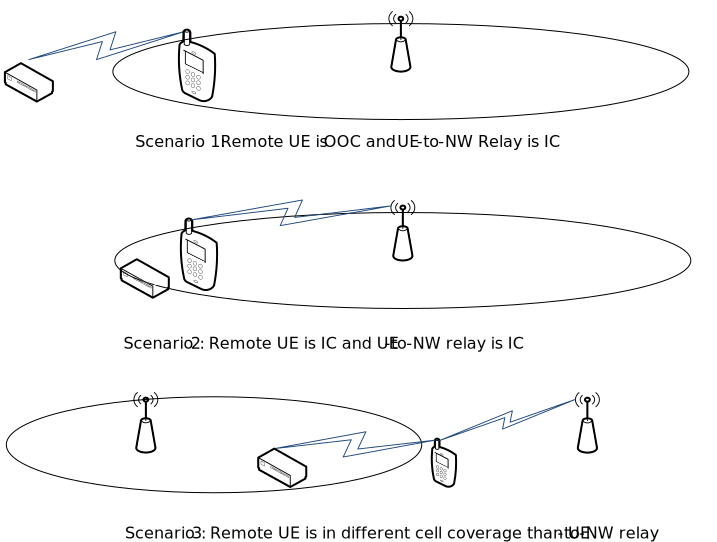
Figure 4.1-1: Scenarios for UE-to-Network Relay
NR Uu is assumed on the Uu link of the UE-to-Network Relay UE. NR sidelink is assumed on PC5 between the Remote UE(s) and the UE-to-Network Relay UE.
Cross-RAT configuration/control of UE (Remote UE or UE-to-Network Relay UE) is not considered, i.e., eNB/ng-eNB do not control/configure an NR Remote UE and UE-to-Network Relay UE. For UE-to-Network Relay, the study focuses on unicast data traffic between the Remote UE and the Network.
Configuring/scheduling of a UE (Remote UE or UE-to-Network Relay UE) by the SN to perform NR sidelink communication is out of scope of this study.
For UE-to-Network Relay, relaying of unicast data between the Remote UE and the network can occur after a PC5-RRC connection is established between the Relay UE and the Remote UE.
The Uu RRC state of the Relay UE and Remote UE can change when connected via PC5. Both Relay UE and Remote UE can perform relay discovery in any RRC state. A Remote UE can perform relay discovery while out of Uu coverage.
A Relay UE must be in RRC_CONNECTED to perform relaying of unicast data.
For L2 UE-to-Network Relay:
- Remote UE(s) must be in RRC CONNECTED to perform transmission/reception of relayed unicast data.
- The Relay UE can be in RRC_IDLE, RRC_INACTIVE or RRC_CONNECTED as long as all the PC5-connected Remote UE(s) are in RRC_IDLE.
- The Relay UE can be in RRC_INACTIVE or RRC_CONNECTED as long as all the PC5-connected Remote UE(s) are in RRC_INACTIVE.
For L3 UE-to-Network Relay, both Relay UE and Remote UE can be in RRC_INACTIVE state.
The requirement of service continuity is only for UE-to-Network Relay, but not for UE-to-UE Relay in this release.
RAN2 have studied the mobility scenario of "between direct (Uu) path and indirect (via the relay) path" for UE-to-Nework relay. RAN2 focus on the mobility scenarios of intra-gNB cases in the study phase, and assume the inter-gNB cases will also be supported. For the inter-gNB cases, compared to the intra-gNB cases, potential different parts on Uu interface in details can be discussed in the WI phase.RAN2 deprioritize work specific to the mobility scenario of "between indirect (via a first Relay UE) and indirect (via a second Relay UE)" for path switching in the SI phase, which can be studied in the WI phase, if needed.
RAN2 deprioritize the group mobility scenario in the SI phase, which may be discussed in WI phase, if needed.
Model A and model B discovery model as defined in clause 5.3.1.2 of TS 23.303 [3] are supported for UE-to-Network Relay. The protocol stack of discovery message is described in Figure 4.2-1.
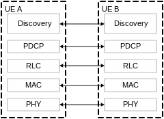
Figure 4.2-1: Protocol Stack of Discovery Message for UE-to-Network Relay
For Relay UE of UE-to-Network Relay:
- The Relay UE needs to be within a minimum and a maximum Uu signal strength threshold(s) if provided by gNB before it can transmit discovery message when in RRC_IDLE or in RRC_INACTIVE state.
- Relay UE is allowed to transmit discovery message based on NR sidelink communication configuration provided by gNB in all RRC states.
- Relay UE supporting L3 UE-to-Network Relay is allowed to transmit discovery message based on at least pre-configuration when it is connected to a gNB which is not capable of sidelink relay operation, in case its serving carrier is not shared with carrier for sidelink operation.
- Relay UE supporting L2 UE-to-Network Relay should be always connected to a gNB which is capable of sidelink relay operation including providing configurations for transmission of discovery messages.
For Remote UE of UE-to-Network Relay:
- The Remote UE in RRC_IDLE and RRC_INACTIVE state is allowed to transmit discovery message if measured signal strength of serving cell is lower than a configured threshold.
- Whether Remote UE in RRC_CONNECTED is allowed to transmit discovery is based on configuration provided by serving gNB. The detail of configuration provided by serving gNB can be discussed in WI phase.
- No additional network configuration is needed for Uu measurement by Remote UE in RRC_IDLE or RRC_INACTIVE.
- Remote UE out of coverage is always allowed to transmit discovery message based on pre-configuration while not connected with network through a Relay UE yet.
- Remote UE supporting UE-to-Network Relay is allowed to transmit discovery message based on at least pre-configuration when it is directly connected to a gNB which is not capable of sidelink relay operation, in case its serving carrier is not shared with SL carrier.
- For Remote UE supporting L3 UE-to-Network Relay which is out of coverage and connected to a gNB indirectly, it is not feasible for the serving gNB to provide radio configuration to transmit discovery message.
- For Remote UE supporting L2 UE-to-Network Relay which is out of coverage and connected to a gNB indirectly, whether it is allowed to transmit discovery message based on configuration provided by the gNB can be discussed in WI phase.
The detailed definition of a gNB which is not capable of sidelink relay operation can be left for WI phase but at least should include the case that the gNB does not provide SL relay configuration, e.g., no discovery configuration.
Resource pool to transmit discovery message can be either shared with or separated from resource pool for data transmission:
- For both shared resource pool and separated resource pool, a new LCID is introduced for discovery message, i.e., discovery message is carried by a new SL SRB.
- Within separated resource pool, discovery messages are treated equally with each other during the LCP procedure.
The baseline solution for relay (re-)selection is as follow:
Radio measurements at PC5 interface are considered as part of relay (re)selection criteria.
- Remote UE at least use the radio signal strength measurements of sidelink discovery messages to evaluate whether PC5 link quality of a Relay UE satisfies relay selection and reselection criterion.
- When Remote UE is connected to a Relay UE, it may use SL-RSRP measurements on the sidelink unicast link to evaluate whether PC5 link quality with the Relay UE satisfies relay reselection criterion.
Further details on the PC5 radio measurements criteria, e.g., in case of no transmission on the sidelink unicast link can be discussed in WI phase. How to perform RSRP measurement based on RSRP of discovery message and/or SL-RSRP if Remote UE has PC5-RRC connection with Relay UE can be decided in WI phase.
For relay selection, as in LTE, an in-coverage Remote UE searches for a candidate Relay UE if direct Uu link quality of the Remote UE is below a configured threshold.
For relay (re-)selection, Remote UE compares the PC5 radio measurements of a Relay UE with the threshold which is configured by gNB or preconfigured. Higher layer criteria also need to be considered by Remote UE for relay (re-)selection, but details can be left to SA2 to decide. Relay (re-)selection can be triggered by upper layers of Remote UE.
Relay reselection should be triggered if the NR Sidelink signal strength of current Sidelink relay is below a (pre)configured threshold. Also, relay reselection may be triggered if RLF of PC5 link with current Relay UE is detected by Remote UE.
The above-described baseline for relay (re)selection apply to both L2 and L3 solutions. But for RRC_CONNECTED Remote UE connected through L2 UE-to-Network Relay scenario, gNB decision on relay selection/reselection is considered in WI phase under the above baseline. Additional AS layer criteria can be considered in WI phase for both L2 and L3 UE-to-Network Relay solutions.
For relay (re-)selection, when Remote UE has multiple suitable Relay UE candidates which meet all AS-layer & higher layer criteria and Remote UE need to select one Relay UE by itself, it is up to Remote UE implementation to choose one Relay UE. This does not exclude gNB involvement in service continuity for UE-to-Network Relay scenarios.
It is concluded that no impact on RAN2 is foreseen due to authorization of both Relay UE and Remote UE. The impact on RAN3, if any, will be done in WI phase for UE-to-Network Relay only.
The protocol stacks for the user plane and control plane of L2 UE-to-Network Relay architecture are described in Figure 4.5.1.1-1 and Figure 4.5.1.1-2 for the case where adaptation layer is not supported at the PC5 interface, and Figure 4.5.1.1-3 and Figure 4.5.1.1-4 for the case where adaptation layer is supported at the PC5 interface.
For L2 UE-to-Network Relay, the adaptation layer is placed over RLC sublayer for both CP and UP at the Uu interface between Relay UE and gNB. The Uu SDAP/PDCP and RRC are terminated between Remote UE and gNB, while RLC, MAC and PHY are terminated in each link (i.e. the link between Remote UE and UE-to-Network Relay UE and the link between UE-to-Network Relay UE and the gNB). Whether the adaptation layer is also supported at the PC5 interface between Remote UE and Relay UE is left to WI phase (assuming down-selection first before studying too much on the detailed PC5 adaptation layer functionalities).
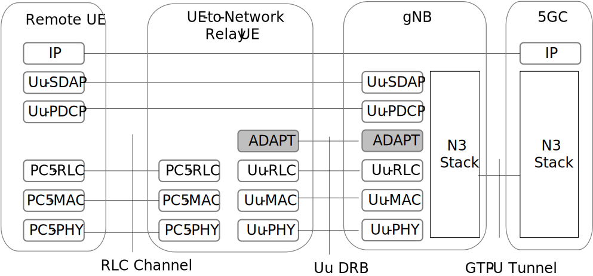
Figure 4.5.1.1-1: User plane protocol stack for L2 UE-to-Network
Relay
(adaptation layer is not supported at the PC5 interface)
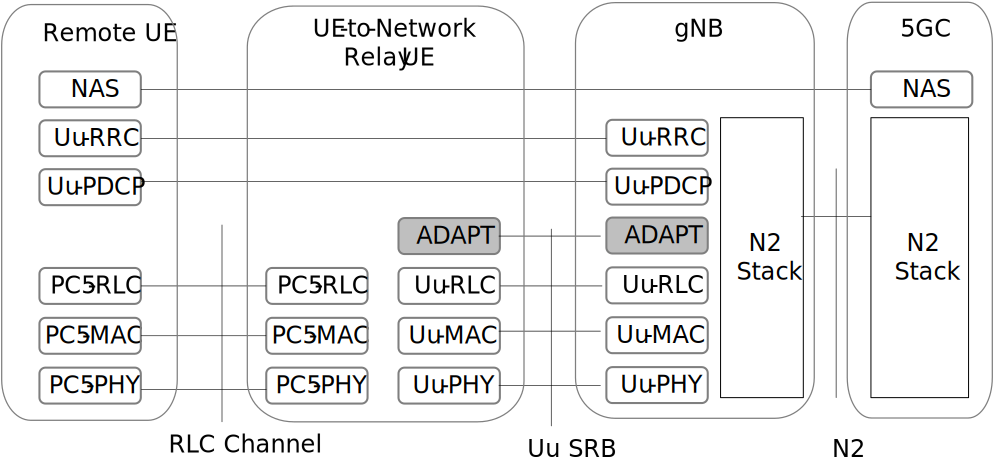
Figure 4.5.1.1-2: Control plane protocol stack for L2 UE-to-Network
Relay
(adaptation layer is not supported at the PC5 interface)
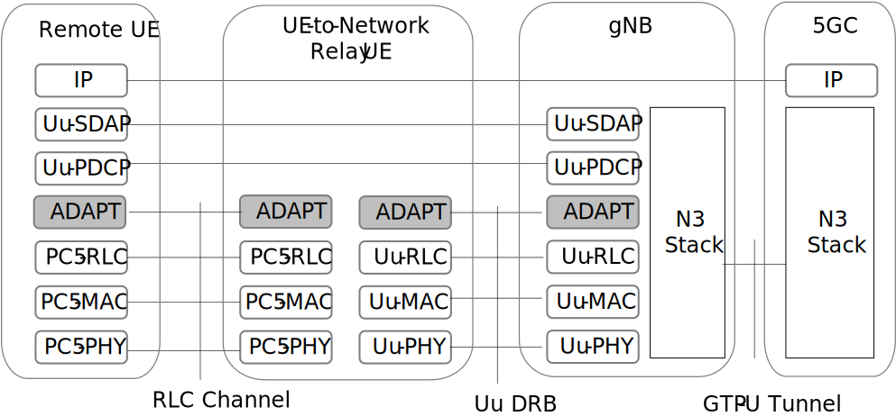
Figure 4.5.1.1-3: User plane protocol stack for L2 UE-to-Network
Relay
(adaptation layer is supported at the PC5 interface)
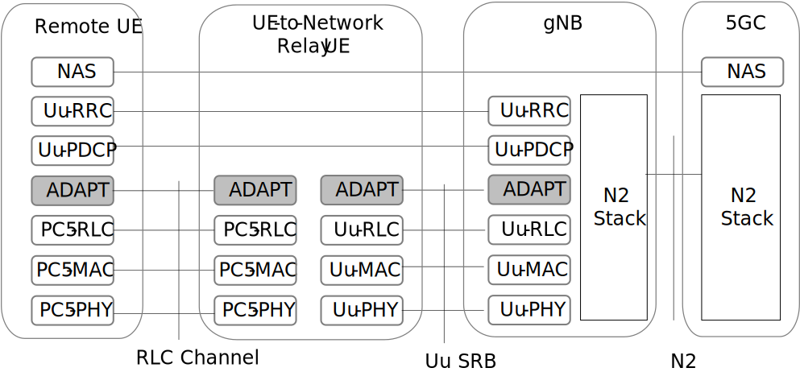
Figure 4.5.1.1-4: Control plane protocol stack for L2 UE-to-Network
Relay
(adaptation layer is supported at the PC5 interface)
For L2 UE-to-Network Relay, for uplink:
- The Uu adaptation layer at Relay UE supports UL bearer mapping between ingress PC5 RLC channels for relaying and egress Uu RLC channels over the Relay UE Uu path. For uplink relaying traffic, the different end-to-end RBs (SRB, DRB) of the same Remote UE and/or different Remote UEs can be subject to N:1 mapping and data multiplexing over one Uu RLC channel.
- The Uu adaptation layer is used to support Remote UE identification for the UL traffic (multiplexing the data coming from multiple Remote UE). The identity information of Remote UE Uu Radio Bearer and Remote UE is included in the Uu adaptation layer at UL in order for gNB to correlate the received data packets for the specific PDCP entity associated with the right Remote UE Uu Radio Bearer of a Remote UE.
For L2 UE-to-Network Relay, for downlink:
- The Uu adaptation layer can be used to support DL bearer mapping at gNB to map end-to-end Radio Bearer (SRB, DRB) of Remote UE into Uu RLC channel over Relay UE Uu path. The Uu adaptation layer can be used to support DL N:1 bearer mapping and data multiplexing between multiple end-to-end Radio Bearers (SRBs, DRBs) of a Remote UE and/or different Remote UEs and one Uu RLC channel over the Relay UE Uu path.
- The Uu adaptation layer needs to support Remote UE identification for Downlink traffic. The identity information of Remote UE Uu Radio Bearer and the identity information of Remote UE needs be put into the Uu adaptation layer by gNB at DL in order for Relay UE to map the received data packets from Remote UE Uu Radio Bearer to its associated PC5 RLC channel.
gNB implementation can handle the QoS breakdown over Uu and PC5 for the end-to-end QoS enforcement of a particular session established between Remote UE and network in case of L2 UE-to-Network Relay. Details of handling in case PC5 RLC channels with different end-to-end QoS are mapped to the same Uu RLC channel can be discussed in WI phase.
As described in clause 6.7.2.8 of TR 23.752, in case of L2 UE-to-Network Relay, the security (confidentiality and integrity protection) is enforced at the PDCP layer between the endpoints at the Remote UE and the gNB. The PDCP traffic is relayed securely over two links, one between the Remote UE and the UE-to-Network Relay UE and the other between the UE-to-Network Relay UE to the gNB.
L2 UE-to-Nework Relay uses the RAN2 principle of the Rel-15 NR handover procedure as the baseline AS layer solution to guarantee service continuit, i.e. gNB hands over the Remote UE to a target cell or target Relay UE, including:
1) Handover preparation type of procedure between gNB and Relay UE (if needed);
2) RRCReconfiguration to Remote UE, Remote UE switching to the target, and;
3) Handover complete message, similar to the legacy procedure.
Exact content of the messages (e.g. handover command) can be discussed in WI phase. This does not imply that we will send inter-node message over Uu.
Below, the common parts of intra-gNB cases and inter-gNB cases are captured. For the inter-gNB cases, compared to the intra-gNB cases, potential different parts on RAN2 Uu interface in details can be discussed in WI phase.
For service continuity of L2 UE-to-Network relay, the following baseline procedure is used, in case of Remote UE switching to direct Uu cell.
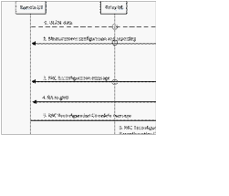
Figure 4.5.4.1-1: Procedure for Remote UE switching to direct Uu cell
Step 1: Measurement configuration and reporting
Step 2: Decision of switching to a direct cell by gNB
Step 3: RRC Reconfiguration message to Remote UE
Step 4: Remote UE performs Random Access to the gNB
Step 5: Remote UE feedback the RRCReconfigurationComplete to gNB via target path, using the target configuration provided in the RRC Reconfiguration message.
Step 6: RRC Reconfiguration to Relay UE
Step 7: The PC5 link is released between Remote UE and the Relay UE, if needed.
Step 8: The data path switching.
NOTE: The order of step 6/7/8 is not restricted. Following are
further discussed in WI phase, including:
- Whether Remote UE suspends data transmission via relay link after step
3;
- Whether Step 6 can be before or after step 3 and its necessity;
- Whether Step 7 can be after step 3 or step 5, and its
necessity/replaced by PC5 reconfiguration;
- Whether Step 8 can be after step 5.
For service continuity of L2 UE-to-Network Relay, the following baseline procedure is used, in case of Remote UE switching to indirect Relay UE:
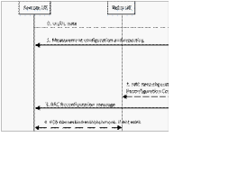
Figure 4.5.4.2-1: Procedure for Remote UE switching to indirect Relay UE
Step 1: Remote UE reports one or multiple candidate Relay UE(s), after Remote UE measures/discoveries the candidate Relay UE(s).
- Remote UE may filter the appropriate Relay UE(s) meeting higher layer criteria when reporting, in step 1.
- The reporting may include the Relay UE's ID and SL RSRP information, where the measurement on PC5 details can be left to WI phase, in step 1.
Step 2: Decision of switching to a target Relay UE by gNB, and target (re)configuration is sent to Relay UE optionally (like preparation).
Step 3: RRC Reconfiguration message to Remote UE. Following information may be included: 1) Identity of the target Relay UE; 2) Target Uu and PC5 configuration.
Step 4: Remote UE establishes PC5 connection with target Relay UE, if the connection has not been setup yet.
Step 5: Remote UE feedback the RRCReconfigurationComplete to gNB via target path, using the target configuration provided in RRCReconfiguration.
Step 6: The data path switching.
NOTE: Following are further discussed in WI phase, including:
- Whether Step 2 should be after Relay UE connects to the gNB (e.g.
after step 4), if not yet before;
- Whether Step 4 can be before step 2/3.
Remote UE needs to establish its own PDU sessions/DRBs with the network before user plane data transmission.
PC5-RRC aspects of Rel-16 NR V2X PC5 unicast link establishment procedures can be reused to setup a secure unicast link between Remote UE and Relay UE for L2 UE-to-Network relaying before Remote UE establishes a Uu RRC connection with the network via Relay UE.
For both in-coverage and out-of-coverage cases, when the Remote UE initiates the first RRC message for its connection establishment with gNB, the PC5 L2 configuration for the transmission between the Remote UE and the UE-to-Network Relay UE can be based on the RLC/MAC configuration defined in specifications.
The establishment of Uu SRB1/SRB2 and DRB of the Remote UE is subject to legacy Uu configuration procedures for L2 UE-to-Network Relay.
The following high level connection establishment procedure applies to L2 UE-to-Network Relay:
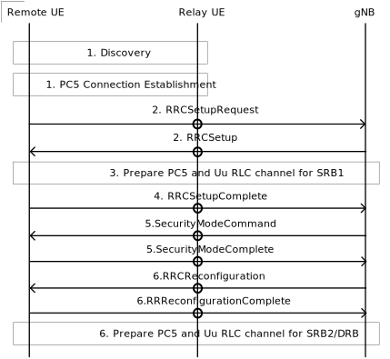
Figure 4.5.5.1-1: Procedure for Remote UE connection establishment
Step 1. The Remote and Relay UE perform discovery procedure, and establish PC5-RRC connection using the legacy Rel-16 procedure as a baseline.
Step 2. The Remote UE sends the first RRC message (i.e., RRCSetupRequest) for its connection establishment with gNB via the Relay UE, using a default L2 configuration on PC5. The gNB responds with an RRCSetup message to Remote UE. The RRCSetup delivery to the Remote UE uses the default configuration on PC5. If the Relay UE had not started in RRC_CONNECTED, it would need to do its own connection establishment upon reception of a message on the default L2 configuration on PC5. The details for Relay UE to forward the RRCSetupRequest/RRCSetup message for Remote UE at this step can be discussed in WI phase.
Step 3. The gNB and Relay UE perform relaying channel setup procedure over Uu. According to the configuration from gNB, the Relay/Remote UE establishes an RLC channel for relaying of SRB1 towards the Remote UE over PC5. This step prepares the relaying channel for SRB1.
Step 4. Remote UE SRB1 message (e.g. an RRCSetupComplete message) is sent to the gNB via the Relay UE using SRB1 relaying channel over PC5. Then the Remote UE is RRC connected over Uu.
Step 5. The Remote UE and gNB establish security following legacy procedure and the security messages are forwarded through the Relay UE.
Step 6. The gNB sets up additional RLC channels between the gNB and Relay UE for traffic relaying. According to the configuration from gNB, the Relay/Remote UE sets up additional RLC channels between the Remote UE and Relay UE for traffic relaying. The gNB sends an RRCReconfiguration to the Remote UE via the Relay UE, to set up the relaying SRB2/DRBs. The Remote UE sends an RRCReconfigurationComplete to the gNB via the Relay UE as a response.
Besides the connection establishment procedure, for L2 UE-to-Network relay:
- The RRC reconfiguration and RRC connection release procedures can reuse the legacy RRC procedure, with the message content/configuration design left to WI phase.
- The RRC connection re-establishment and RRC connection resume procedures can reuse the legacy RRC procedure as baseline, by considering the above connection establishment procedure of L2 UE-to-Network Relay to handle the relay specific part, with the message content/configuration design left to WI phase.
The Option 2 as studied in TR36.746 [7] for FeD2D paging is selected as the baseline paging relaying solution for L2 UE-to-Network relaying case (i.e. Relay UE monitors the Remote UE's Paging Occasion(s) in addition to its own Paging Occasion(s).) . The paging relaying solution applies to both CN paging and RAN paging via the Option 2.
Relay UE can forward the system information to Remote UE via broadcast, groupcast, or dedicated PC5-RRC signalling. The detailed mechanisms of broadcast, groupcast and PC5-RRC signalling design and what system information can be relayed to Remote UEs can be discussed in WI phase.
On-demand SI request is supported for Remote UE for all RRC states (Idle/Inactive/Connected state). DedicatedSIBRequest procedure is re-used for the Remote UE in RRC_CONNECTED to request SI via the Relay UE. For the Remote UE in RRC_IDLE/RRC_INACTIVE, how on-demand SI procedure differs from legacy can be discussed in the WI phase.
A Remote UE (IC or OOC) can request/receive SI via the Relay UE when PC5-RRC connected to a Relay UE. Reception via Uu for IC Remote UE can be discussed in the WI phase.
For L2 UE-to-Network relay, the Relay UE may provide UAC parameters to Remote UE. The access control check is performed at Remote UE using the parameters of the cell it intends to access. The UE-to-Network Relay UE does not perform access control check for the Remote UE's data.
SA2 captured two user plane protocol stacks for L3 UE-to-Network Relay in TR 23.752 (Figure 6.6.1-2 of solution#6 and Figure 6.23.2-3 of solution#23), which are illustrated in Figure 4.6.1-1 and Figure 4.6.1-2. No impacts are identified to support them from RAN2 perspective.
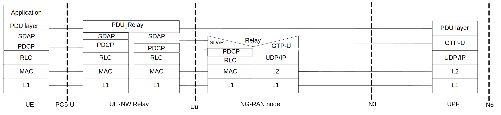
Figure 4.6.1-1: user plane protocol stack of L3 UE-to-Network Relay captured in solution#6 of [6]
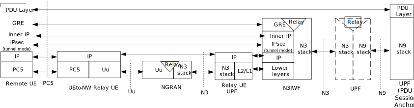
Figure 4.6.1-2: user plane protocol stack of L3 UE-to-Network Relay captured in solution#23 of [6]
SA2 captured control plane protocol stacks of L3 UE-to-Network Relay in solution#6 of TR 23.752 [6]. RAN2 leaves its design to SA2.
For N3IWF solution (i.e. solution#23 captured in TR 23.752 [6]),
- RAN2 understanding is that Remote UE's NAS is sent over PC5/Uu-DRB. If any AS impact of NAS transport in solution#23 is identified by SA2, RAN2 can further discuss it in WI phase.
- For the IP header overhead of L3 UE-to-Network Relay with N3IWF, RAN2 conclude that outer IP header on each hop can be compressed by ROHC "ESP/IP profile", but the inner IP header can't be compressed by the AS layer, whose impact could be evaluated by SA2.
The basic QoS support mechanism for L3 UE-to-Network Relay is illustrated in Figure 4.6.2-1 from TR 23.752 [6].
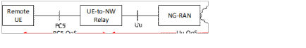
Figure 4.6.2-1: basic QoS support mechanism of L3 UE-to-Network Relay captured in [6]
SA2 captured two solutions for QoS support of L3 UE-to-Network Relay:
1) Separate Uu QoS parameters and PC5 QoS parameters as in option-2 of solution#25 of TR 23.752 [6].
2) End-to-End QoS support in solution#24 of TR 23.752 [6], where Relay UE can obtain a mapping between PQI and 5QI from SMF/PCF.
No AS impact is identified for SA2 QoS solution#24 and #25 captured in TR 23.752 [6], for which legacy PC5-RRC procedure can be reused. RAN2 can consider in WI phase SA2 conclusions on QoS solutions, including whether it is sufficient to enforce E2E QoS via legacy PC5-RRC reconfiguration of SLRB and resource allocation.
Remote UE doesn't need to provide information on which QoS flows need to be relayed to UE-to-Network Relay UE in AS layer. RAN2 don't intend to study QoS enhancement for L3 UE-to-Network Relay. And RAN2 don't intend to study the forward compatibility solution for multi-hop support.
Whether other QoS solutions (e.g., whether gNB can perform PDB split) are introduced depends on SA2.
SA2 captured two solutions for security support of L3 UE-to-Network Relay:
1) Via legacy Uu security and PC5 security;
2) Via N3IWF in solution #23 of TR 23.752 [6];
Solution#23 of TR 23.752 [6] with N3IWF is feasible to meet end-to-end security requirements.
Whether the SA2 captured solutions can satisfy the security requirement depends on SA3.
For service continuity in L3 UE-to-Network relay, RAN2 makes working assumption that no AS layer solution will be studied to guarantee the service continuity, and leave it to the upper layer (e.g. application layer) solution. This does not exclude studying some enhancements in mobility scenario for other purposes.
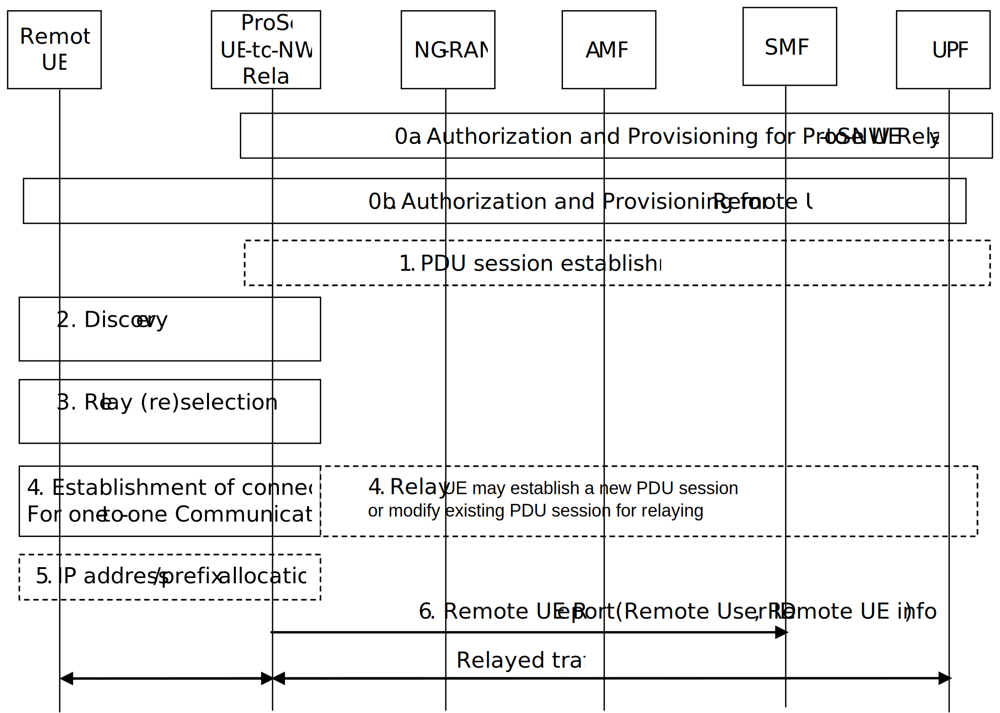
Figure 4.6.5-1: basic connection setup procedure of L3 UE-to-Network Relay based on Figure 6.6.2-1 of [6]
The basic connection setup procedure is illustrated in Figure 4.6.5-1 which is based on Figure 6.6.2-1 in TS 23.752 [6]. Among them, the following procedures are identified with RAN2 impacts:
- Step 2: the discovery procedure, which is described in Clause 4.2.
- Step 3: the relay (re)selection procedure, which is described in Clause 4.3.
- Step 4: Rel-16 NR V2X PC5-RRC establishment procedure is reused to setup a secure unicast link between Remote UE and Relay UE before unicast traffic relaying.
Further AS impacts (if any) can be discussed in WI phase.
Whether new PC5-S signaling is also introduced depends on SA2.
The UE-to-UE Relay enables the coverage extension of the sidelink transmissions between two sidelink UEs and power saving. The coverage scenarios considered in this study are the following:
1) All UEs (Source UE, Relay UE, Destination UE) are in coverage.
2) All UEs (Source UE, Relay UE, Destination UE) are out-of-coverage.
3) Partial coverage whereby at least one of the UEs involved in relaying (Source UE, Relay UE, Destination UE) is in-coverage, and at least one of the UEs involved in relaying is out-of-coverage.
RAN2 will strive for a common solution to the in- and out-of-coverage cases. For the UE-to-UE Relay, the scenario where UEs can be in coverage of the different cell is supported.
Figure 5.1-1 shows the scenarios considered for UE-to-UE Relay. In Figure 5.1-1, coverage implies that the Source/Destination UE and/or UE-to-UE Relay UE are in coverage and can access the network on Uu.
Figure 5.1-1: Scenarios for UE-to-UE Relay (where the coverage status is not shown)
NR sidelink is assumed on PC5 between the Remote UE(s) and the UE-to-UE Relay.
Cross-RAT configuration/control of Source UE, UE-to-UE Relay and Destination UE is not considered, i.e., eNB/ng-eNB do not control/configure an NR Source UE, Destination UE or UE-to-UE Relay UE. For UE-to-UE Relay, this study focuses on unicast data traffic between the Source UE and the Destination UE.
Configuring/scheduling of a UE (Source UE, Destination UE or UE-to-UE Relay UE) by the SN to perform NR sidelink communication is out of scope of this study.
For UE-to-UE Relay, it is assumed that the Remote UE has an active end-to-end connection via only a single Relay UE at a given time.
Relaying of data between a Source UE and a Destination UE can occur once a PC5 link is established between the Source UE, UE-to-UE Relay, and Destination UE.
No restrictions are assumed on the RRC states of any UEs involved in UE-to-UE Relaying.
The requirement of service continuity is only for UE-to-Network Relay, but not for UE-to-UE Relay, during mobility in this release.
Model A and model B discovery model as defined in clause 5.3.1.2 of TS 23.303 [3] are supported for UE-to-UE Relay, and integrated PC5 unicast link establishment procedure can be supported based on SA2 conclusion. The protocol stack of discovery message is described in Figure 5.2-1.
Figure 5.2-1: Protocol Stack of Discovery Message for UE-to-UE Relay
Relay UE or Remote UE is allowed to transmit discovery message when triggered by upper layer.
Both Remote UE and Relay UE can rely on pre-configuration unless relevant radio configuration is provided by network, either via system information or dedicated signalling.
Resource pool to transmit discovery message can be either shared with or separated from resource pool for data transmission.
- For both shared resource pool and separated resource pool, a new LCID is introduced for discovery message i.e. discovery message is carried by a new SL SRB.
- Within separated resource pool discovery messages are treated equally with each other during LCP procedure.
The baseline solution for relay (re-)selection is as follow:
Radio measurements at PC5 interface are considered as part of relay (re)selection criteria.
- Remote UE at least uses the radio signal strength measurements of sidelink discovery messages to evaluate whether PC5 link quality of a Relay UE satisfies relay selection and reselection criterion.
- When Remote UE is connected to a Relay UE, it may use SL-RSRP measurements on the sidelink unicast link to evaluate whether PC5 link quality with the Relay UE satisfies relay reselection criterion.
Further details on the PC5 radio measurements criteria, e.g., in case of no transmission on the sidelink unicast link can be discussed in WI phase. How to perform RSRP measurement based on RSRP of discovery message and/or SL-RSRP if Remote UE has PC5-RRC connection with Relay UE can be decided in WI phase.
For relay (re-)selection, Remote UE compares the PC5 radio measurements of a Relay UE with the threshold which is configured by gNB or preconfigured. Higher layer criteria also need to be considered by Remote UE for relay (re-)selection, but details can be left to SA2 to decide. Relay (re-)selection can be triggered by upper layers of Remote UE.
Relay reselection should be triggered if the NR Sidelink signal strength of current Sidelink relay is below a (pre)configured threshold. Also, relay reselection may be triggered if RLF of PC5 link with current Relay UE is detected by Remote UE.
The above-described baseline for relay (re)selection apply to both L2 and L3 relay solutions. Additional AS layer criteria can be considered in WI phase for both L2 and L3 UE-to-UE Relay solutions.
For relay (re-)selection, when Remote UE has multiple suitable Relay UE candidates which meet all AS-layer & higher layer criteria and Remote UE need to select one Relay UE by itself, it is up to UE implementation to choose one Relay UE.
As captured in TR 23.752, solution#8 and solution#50 in TR 23.752 are taken as baseline solution for L2 and L3 UE-to-UE Relay reselection, and solution#8 and solution#11 in TR 23.752 are taken as baseline solution for L3 UE-to-UE Relay selection.
RAN2 concludes that authorization of both Relay UE and Remote UE has no RAN2 impact.
For L2 UE-to-UE Relay architecture, the protocol stacks are similar to L2 UE-to-Network Relay other than the fact that the termination points are two Remote UEs. The protocol stacks for the user plane and control plane of L2 UE-to-UE Relay architecture are described in Figure 5.5.1-1 and Figure 5.5.1-2.
An adaptation layer is supported over the second PC5 link (i.e. the PC5 link between Relay UE and Destination UE) for L2 UE-to-UE Relay. For L2 UE-to-UE Relay, the adaptation layer is put over RLC sublayer for both CP and UP over the second PC5 link. The sidelink SDAP/PDCP and RRC are terminated between two Remote UEs, while RLC, MAC and PHY are terminated in each PC5 link.
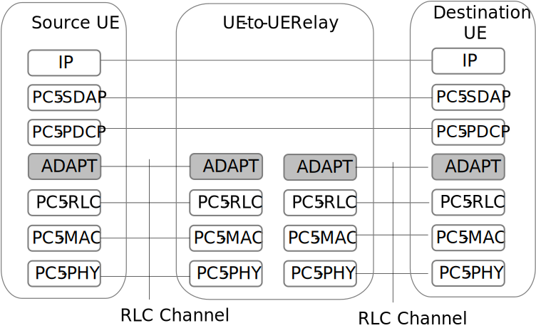
Figure 5.5.1-1: User plane protocol stack for L2 UE-to-UE Relay
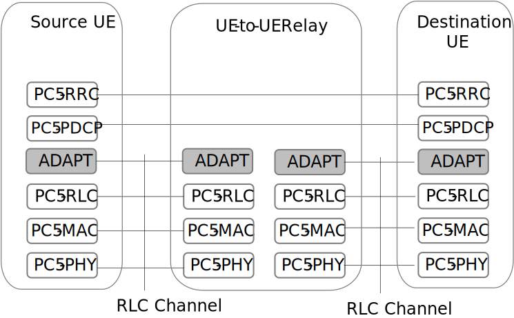
Figure 5.5.1-2: Control plane protocol stack for L2 UE-to-UE Relay
For the first hop of L2 UE-to-UE Relay:
- The N:1 mapping is supported by first hop PC5 adaptation layer between Remote UE SL Radio Bearers and first hop PC5 RLC channels for relaying.
- The adaptation layer over first PC5 hop between Source Remote UE and Relay UE supports to identify traffic destined to different Destination Remote UEs.
For the second hop of L2 UE-to-UE Relay:
- The second hop PC5 adaptation layer can be used to support bearer mapping between the ingress RLC channels over first PC5 hop and egress RLC channels over second PC5 hop at Relay UE.
- PC5 Adaptation layer supports the N:1 bearer mapping between multiple ingress PC5 RLC channels over first PC5 hop and one egress PC5 RLC channel over second PC5 hop and supports the Remote UE identification function.
For L2 UE-to-UE Relay:
- The identity information of Remote UE end-to-end Radio Bearer is included in the adaptation layer in first and second PC5 hop.
- In addition, the identity information of Source Remote UE and/or the identity information of Destination Remote UE are candidate information to be included in the adaptation layer, which are to be decided in WI phase.
QoS handling for L2 UE-to-UE Relay is subject to upper layer, e.g. solution#31 in TR 23.752 studied by SA2.
As described in clause 6.9.1.2 (Solution#9) of TR 23.752, in case of L2 UE-to-UE Relay, the security is established at PDCP layer in an end to end manner between UE1 and UE2. Security aspects require confirmation from SA3.
RAN2 consider the SA2 solution in TR 23.752[6] as baseline. Further RAN2 impacts can be discussed in WI phase, if any.
RAN2 leaves the design of protocol stacks for L3 UE-to-UE Relay to SA2 (TR 23.752 [6]).
No RAN2 impact of the solution captured in SA2 TR 23.752 [6] (solution#31) is identified and the design is in the scope of SA2.
Security protection of L3 UE-to-UE Relay is in the scope of SA2 and SA3. No RAN2 impact is identified.
Whether the SA2 captured solutions can satisfy the security requirement depends on SA3.
No RAN2 impact of the solutions captured in SA2 TR 23.752 [6] (e.g. solution#10 and solution#32) is identified and the design is in the scope of SA2.
RAN2 has studied L2 UE-to-Network Relay and has concluded that L2 UE-to-Network Relay meets all of the objectives of the NR Sidelink Relay SID [8]. Specifically, RAN2 has reached the following conclusions:
Discovery was studied for L2 UE-to-Network Relay and the baseline solution for L2 relay is the same as for L3 relay (as captured in 6.1.2.1). In addition, for L2 UE-to-Network Relay, the Relay UE should always be connected to a SL capable gNB. Further details of discovery configuration for the Remote UE can be discussed in the normative phase.
Relay (Re)selection was studied for L2 UE-to-Network Relay and the baseline solution for L2 relay is the same as for L3 relay (as captured in 6.1.2.1). In addition, for RRC_CONNECTED Remote UE connected through L2 UE-to-Network Relay, gNB decision on relay (re)selection is considered for the normative phase.
Both Relay UE and Remote UE separately follow Rel-16 V2X design (TS 23.287), and no RAN2 impact is expected.
The general QoS handling for L2 UE-to-Network Relay was studied. The gNB implementation can handle the QoS breakdown over Uu and PC5 for end-to-end QoS enforcement, and this breakdown can be flexibly tailored to the AS conditions on sidelink and Uu. Details of handling in case PC5 RLC channels with different E2E QoS are mapped to the same Uu RLC channel can be discussed in the normative phase. The end-to-end QoS enforcement can be supported. In case of OOC, Remote UE operates using the configuration provided in SIB or dedicated RRC signaling with overall better QoS performance than using pre-configuration. QoS can be enforced for each bearer as the gNB can decide whether an E2E bearer is admitted or not depending on the current congestion.
L2 UE-to-Network Relay uses RAN2 aspects of Rel-15 NR handover procedure as a baseline. The AS layer service continuity (i.e. lossless and in-sequence delivery of PDCP PDU with similar performance like legacy HO) can be guaranteed during path switch in L2 UE-to-Network Relay by involving also Relay UEs in the path switch procedure.
In case of L2 UE-to-Network Relay, at AS layer, the security (confidentiality and integrity protection) is enforced end to end by legacy PDCP layer between the endpoints at the Remote UE and the gNB.
The protocol stack and Uu adaptation layer function were studied for L2 UE-to-Network Relay. Whether the adaptation layer is also supported at the PC5 interface between Remote UE and Relay UE can be discussed in the normative phase. In L2 UE-to-Network Relay architecture, the Remote UE is visible to the gNB, and the Remote UE has its own PDU sessions. It supports the gNB configured/controlled bearer mapping at the Relay UE between multiple E2E bearers of a Remote UE and/or different Remote UEs to one Uu RLC channel.
Both connection establishment procedure and path switching procedures were captured for L2 UE-to-Network Relay. The establishment of Uu SRB1/SRB2 and DRB of the Remote UE is subject to legacy Uu configuration procedures. It supports the Remote UE's RRC connection management, which can provide dedicated RRC configuration to Remote UE, reduce the interruption/avoid data loss due to RLF recovery, and speed up RRC connection and data resume, etc. Further details of the steps for path switch procedure (e.g. measurements, message content) and potential differences on the Uu interface for inter-gNB cases may be discussed in the normative phase.
The Option 2 as studied in TR36.746 for FeD2D paging is selected as the baseline paging relaying solution for L2 UE-to-Network Relay. By supporting paging, for Remote UE in RRC_IDLE/RRC_INACTIVE, the DL data reachability can be supported during Remote UE's mobility.
The system information (i.e. SI) request from Remote UE and forwarding mechanism from Relay UE to Remote UE was studied for L2 UE-to-Network Relay. Specifically, the Relay UE can forward system information to the Remote UE via broadcast, groupcast or unicast. On-demand SI request is supported for all RRC states of the Remote UE. The detailed mechanism for such SI request and forwarding and the exact system information that can be relayed to Remote UEs can be discussed at normative phase. It supports the SI delivery in case Remote UE is OOC, which supports Remote UE using SIB provided configuration.
For L2 UE-to- Network relay, the Relay UE may provide UAC parameters to Remote UE for performing Remote UE access control and RAN overload control. The access control check is performed at Remote UE using the parameters of the cell it intends to access. Remote UE access control can take SL congestion into account as the gNB is aware of the congestion status between Remote UE and Relay UE, using legacy CBR measurements.
RAN2 has studied L3 UE-to-Network Relay and has concluded that L3 UE-to-Network Relay meets all the objective of the NR Sidelink Relay SID [8]. Specifically, RAN2 has reached the following conclusions:
RAN2 concluded that both the model A and model B are to be supported, and similar AS criteria of LTE relay will be reused as baseline. The details are left to WI.
RAN2 confirmed the solution is up to SA2 and SA3 with no RAN2 impact foreseen.
This is subject to upper layer solutions defined by SA2 in TR 23.752 [6], clause 8.3. RAN2 can consider in WI phase the SA2 conclusions on QoS solutions, including whether it is sufficient to enforce E2E QoS via legacy PC5-RRC reconfiguration of SLRB and resource allocation.
No AS layer solution is studied in RAN2 to guarantee service continuity, and this is left to the upper layer solutions defined by SA2 in TR 23.752 [6].
Solution#23 of TR 23.752 [6] with N3IWF is assumed to be feasible to meet end-to-end security requirements from RAN2 perspective.
RAN2 concluded the CP and UP protocol stacks of L3 UE-to-Network Relay are up to SA2 and these are illustrated in TR 23.752 [6].
For CP procedures, PC5-RRC aspects of Rel-16 NR V2X PC5 unicast link establishment procedures can be reused to setup a secure PC5 unicast link. Further AS impacts (if any) can be discussed in WI phase. Whether new PC5-S signalling is also introduced depends on SA2. For path switch procedure, there is no AS solution discussed and concluded in RAN2 to perform path switch procedure from indirect link to direct link in case there is data transmission between Remote UE and gNB via a Relay UE.
RAN2 has studied L2 UE-to-UE Relay and has concluded that L2 UE-to-UE Relay meets all of the objectives of the NR Sidelink Relay SID [8]. Specifically, RAN2 has reached the following conclusions:
Discovery was studied for L2 UE-to-UE Relay and the baseline solution for L2 relay is the same as that of L3 relay.
Relay (Re)selection was studied for L2 UE-to-UE Relay and the baseline solution for L2 relay is the same as that of L3 relay.
Both Relay UE and Remote UE separately follow Rel-16 V2X design (TS 23.287), and no RAN2 impact is expected.
The design of QoS support for L2 UE-to-UE Relay are in the scope of SA2. No RAN2 impact of the solution captured in SA2 is identified thus far.
In case of L2 UE-to-UE Relay, the security is established at PDCP layer in an end to end manner between source Remote UE and destination Remote UE. The end-to-end security can be supported.
The protocol stack and PC5 adaptation layer function (both first hop PC5 and second hop PC5) were studied for L2 UE-to-UE Relay. The usage of PC5 adaptation layer header(s) enables the AS layer routing/forwarding via Relay UE for end-to-end UE-to-UE traffic.
The connection establishment procedure was studied for L2 UE-to-UE Relay. RAN2 consider the SA2 solution in TR 23.752 as baseline. Further RAN2 impacts can be discussed in WI phase, if any.
RAN2 has studied L3 UE-to-UE Relay and has concluded that L3 UE-to-UE Relay meets all the objective of the NR Sidelink Relay SID [8]. Specifically, RAN2 has reached the following conclusions:
RAN2 concluded that both the model A and model B are to be supported, and similar AS criteria of LTE relay will be reused as baseline. The details are left to WI.
RAN2 confirmed the solution is up to SA2 and SA3 with no RAN2 impact foreseen.
This is subject to upper layer solutions defined by SA2 in TR 23.752 [6], clause 8.4.
RAN2 concluded the solution is up to SA2 and SA3.
RAN2 concluded the CP and UP protocol stacks of L3 UE-to-UE Relay are up to SA2 and these are illustrated in TR 23.752 [6].
RAN2 concluded the design is left to SA2.
RAN2 has studied direct discovery procedure, UE-to-Network Relay, and UE-to-UE Relay solutions.
Mechanisms for L2 relay and L3 relay have been studied and identified by RAN2, striving for minimum specification impact. The standards impact of L2 relay is principally in RAN and the standards impact of L3 relay is principally in SA. In this study, both L2 based Relay architecture and L3 based Relay architecture have been found feasible.
RAN2 recommends both L2 and L3 UE-to-Network and UE-to-UE Relay can proceed to normative work (The final decision depends on both SA and RAN TSGs#91e outcome).
Annex A: Change history
| Change history | |||||||
| Date | Meeting | TDoc | CR | Rev | Cat | Subject/Comment | New version |
| 2020-08 | RAN2#111-E | R2-2006602 | Skeleton TR | 0.0.0 | |||
| 2020-08 | RAN2#111-E | R2-2008251 | Revised Skeleton TR | 0.0.1 | |||
| 2020-08 | RAN2#111-E | R2-2008272 | Update from RAN2#111-E | 0.1.0 | |||
| 2020-08 | RAN2#111-E | R2-2008274 | Correction on the protocol stack figure for the L2 Relay | 0.1.1 | |||
| 2020-11 | RAN2#112-E | R2-2010856 | Update from RAN2#112-E | 0.2.0 | |||
| 2020-12 | RAN#90 | RP-202250 | Submit to RAN#90 for information | 1.0.0 | |||
| 2021-02 | RAN2#113-E | R2-2100113 | Editorial Change | 1.0.1 | |||
| 2021-03 | RAN2#113-E | R2-2102060 | Evalaution and conclusion on L2 and L3 Relay, and update based on R2-2102116, R2-2102115, R2-2102111, R2-2102118. | 1.1.0 | |||
| 2021-03 | RAN#91 | RP-210245 | Submit to RAN#91 for approval | 2.0.0 | |||
| 2021-03 | RAN#91 | Approved and upgraded to v17.0.0 | 17.0.0 | ||||